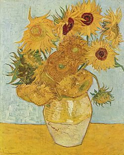

Artistas
En esta sección puedes encontrar información de tres de los artistas más importantes de la historia del arte. Contiene información de Vincent van Gogh, Pablo Picasso y Frida Kahlo.
Vicent van Gogh
 Nombre de nacimiento: Vincent Willem Van Gogh
Fecha nacimiento: 30 de arzo de 1853
Fecha de fallecimiento: 29 de julio 1890
País de nacimiento: Holanda
Era el hijo mayor de un sacerdote de quien heredó la vocación religiosa, su familia no tenía demasiado dinero. En 1863 entró en el colegio de Zerenbergen, pero tuvo que abandonarlo por la situación económica de sus padres.A los 16 años empezó a trabajar como empleado en la Galería de Arte Goupil de La Haya, que estaba siendo dirigida por su tío. Allí comienza su afición por la pintura y la literatura. La galería se trasladó a Londres y Vincent decidió mudarse a una pensión. Allí llevó una vida tranquila y comenzó a dibujar, pero después de ser rechazado por la mujer de la que estaba enamorado, se volvió violento y huraño y se trasladó a París.En esos momentos tan deprimentes de su vida vio la religión como su único camino y decidió hacerse sacerdote, pero no fue admitido en el seminario. Al fin se hizo predicador, nombrado por el consistorio de Bruselas, y fue destinado a Borinage. Allí convivió con unos mineros, pero después de apoyar una de sus huelgas le retiraron de la vida religiosa y él decidió dedicarse enteramente a la pintura y a la lectura.Trabajó como profesor, predicador y vendedor de libros, hasta darse cuenta de que el dibujo era su verdadera pasión. Gracias a su hermano Theo entró a los 27 años en la Academia de pintura de Bruselas. En un viaje a La Haya en 1881 empieza a relacionarse con los círculos de artistas del lugar y decide interesarse por la naturaleza muerta.Aunque siguió dibujando no conseguía vender sus dibujos ni sus cuadros y empezó a recibir dinero de su hermano Theo, con quien se escribió cartas durante toda su vida para informarle de su situación.Vincent empezó a tener alucinaciones y a padecer dolores muy graves, así que su hermano decidió ingresarlo en el Hospital de Saint Paul, donde le rechazaron. El Hospital de Saint Reney lo acogió y le diagnosticaron epilepsia y esquizofrenia. Aún con su enfermedad, Vincent siguió pintando y dibujando sin parar, aunque sus obras continuaron sin tener éxito y sin darle dinero. Tan sólo vendió dos cuadros en su vida.El 29 de julio del año 1890 Vincent murió en Francia.
Nombre de nacimiento: Vincent Willem Van Gogh
Fecha nacimiento: 30 de arzo de 1853
Fecha de fallecimiento: 29 de julio 1890
País de nacimiento: Holanda
Era el hijo mayor de un sacerdote de quien heredó la vocación religiosa, su familia no tenía demasiado dinero. En 1863 entró en el colegio de Zerenbergen, pero tuvo que abandonarlo por la situación económica de sus padres.A los 16 años empezó a trabajar como empleado en la Galería de Arte Goupil de La Haya, que estaba siendo dirigida por su tío. Allí comienza su afición por la pintura y la literatura. La galería se trasladó a Londres y Vincent decidió mudarse a una pensión. Allí llevó una vida tranquila y comenzó a dibujar, pero después de ser rechazado por la mujer de la que estaba enamorado, se volvió violento y huraño y se trasladó a París.En esos momentos tan deprimentes de su vida vio la religión como su único camino y decidió hacerse sacerdote, pero no fue admitido en el seminario. Al fin se hizo predicador, nombrado por el consistorio de Bruselas, y fue destinado a Borinage. Allí convivió con unos mineros, pero después de apoyar una de sus huelgas le retiraron de la vida religiosa y él decidió dedicarse enteramente a la pintura y a la lectura.Trabajó como profesor, predicador y vendedor de libros, hasta darse cuenta de que el dibujo era su verdadera pasión. Gracias a su hermano Theo entró a los 27 años en la Academia de pintura de Bruselas. En un viaje a La Haya en 1881 empieza a relacionarse con los círculos de artistas del lugar y decide interesarse por la naturaleza muerta.Aunque siguió dibujando no conseguía vender sus dibujos ni sus cuadros y empezó a recibir dinero de su hermano Theo, con quien se escribió cartas durante toda su vida para informarle de su situación.Vincent empezó a tener alucinaciones y a padecer dolores muy graves, así que su hermano decidió ingresarlo en el Hospital de Saint Paul, donde le rechazaron. El Hospital de Saint Reney lo acogió y le diagnosticaron epilepsia y esquizofrenia. Aún con su enfermedad, Vincent siguió pintando y dibujando sin parar, aunque sus obras continuaron sin tener éxito y sin darle dinero. Tan sólo vendió dos cuadros en su vida.El 29 de julio del año 1890 Vincent murió en Francia.
Su éxito nació muchos años más tarde, cuando sus cuadros interesaron a la crítica europea. Sus cuadros más famosos son: “La habitación de Arles”, “La noche estrellada”, “Los girasoles” y “Autorretrato”.
Pablo Picasso
Nombre de nacimiento: Pablo Diego José Francisco de Paula Juan Nepomuceno María de los Remedios Cipriano de la Santísima Trinidad Ruiz y Picasso
Fecha nacimiento: 25 de octubre de 1881
Fecha de fallecimiento: 8 de abril de 1973
País de nacimiento: España
Fue hijo de un pintor vasco llamado José Ruiz Blasco y de su esposa, María Picasso. Durante su infancia su familia tuvo bastantes dificultades económicas, así que en 1895 se mudan a Barcelona donde su padre consigue un puesto de profesor en la Escola d’Arts y Oficis de la Llotja de Barcelona.Pablo Picasso, que desde muy joven ya había destacado en la pintura y recibía encargos de gente muy influyente, consigue ser admitido en la escuela resolviendo en un día los ejercicios que otros tardaban en terminar un mes. A los quince años ya tenía un taller en la calle de la Plata de la Ciudad Condal y su éxito fue creciendo.En 1900 viajó a París para visitar la Exposición Universal, donde vendió algunos de sus dibujos a Petrus Mañach, que le ofreció 150 francos al mes por sus obras. Se convirtió así en un artista profesional y decidió mudarse a París definitivamente.De joven Picasso siempre pintó obras con un realismo académico absoluto, intentó retratar la realidad tal y como la veía y sus padres le ayudaron posando como modelos para sus pinturas y sus retratos. Todo esto cambió cuando se mudó a París, donde adoptó y desarrolló el movimiento pictórico del ‘Cubismo’. Gracias a este nuevo estilo abandonó el realismo de sus pinturas y empezó a cambiar la forma y los colores de los objetos que pintaba. Lo desarrolló hasta tal extremo que empezó a convertirse en un estilo muy abstracto. Expuso sus cuadros en algunas exposiciones de Londres y Barcelona, y su nuevo estilo fue tanto criticado como admirado entre el público.Durante el año 1914 la guerra trajo desgracias. Él apoyó el bando republicano y aceptó durante ese período el ser director del museo de Prado. En el año 1944 se unió al Partido Comunista Francés y también se cansó de la pintura, así que empezó a hacer estampas, grabados y esculturas que tuvieron tanto éxito como sus cuadros.En 1957 se enamoró de Jacqueline Roqué, con la que estuvo hasta morir en el año 1973.
Picasso pasó por varias etapas mientras su pintura evolucionaba. Su primera etapa fue el realismo, donde plasmó en sus obras la realidad que veía. La siguiente fue la ‘etapa azul’, donde sólo utilizó colores azules para sus obras. Sus obras más famosas son: ‘Guernica’ o ‘Las señoritas de Avignon’.
Frida Kahlo
 Nombre de nacimiento: Magdalena Carmen Frida Kahlo Calderón
Fecha nacimiento: 6 de julio de 1907
Fecha de fallecimiento: 13 de julio de 1954
País de nacimiento: México
Fue la tercera hija de un fotógrafo alemán llamado Guillermo Kahlo y de su esposa, Matilde Calderón. Durante su infancia, Frida contrajo muchas enfermedades y tuvo varios accidentes. La primera enfermedad que tuvo fue una poliomielitis, que le dejó una pierna más delgada que la otra y además la obligó a quedarse en cama durante nueve meses y a hacerse muchas operaciones. Su padre intentó por aquella época animarla a hacer deportes como el fútbol y el boxeo, pero después de todas las operaciones y la rehabilitación, a Frida le costaba demasiado practicar esas actividades o juntarse con los demás niños de su edad para jugar.Frida sentía muchísimo aprecio hacia su padre, que la acompañaba en todo momento en el hospital y durante la rehabilitación, y con su hermana menor Cristina, con quien estuvo siempre muy unida y tenía un lazo de cariño muy fuerte. En 1922 asistió a la Escuela Nacional Preparatoria, donde habían comenzado a admitir mujeres. Allí se unió a un grupo llamado “Los Cachuchas”, alumnos de la misma escuela que querían cambiar el sistema escolar y político de México con sus nuevas ideas y su pensamiento. Comenzó a trabajar en un taller de grabado de un amigo de su padre como aprendiz, pero no se había interesado mucho por la pintura, y sólo se dedicaba a copiar los grabados que su maestro le indicaba.En 1925 Frida tuvo un accidente, y el bus donde viajaba fue atropellado por un tranvía. Tuvo tantas lesiones que tuvo que someterse a un total de 32 operaciones que la dejaron años postrada en la cama de un hospital para asegurarse de que sus huesos sanaban del todo. Durante ese período fue cuando comenzó a pintar cuadros para expresar el dolor que sentía y que estaba sola.En 1929 se casó con Diego Rivera, otro artista que pintaba murales. Diego admiraba los cuadros de Frida y la animaba a seguir pintando, mientras que ella también admiraba sus murales y daba su opinión al respecto. Ambos estuvieron cuatro años viviendo en el extranjero y haciendo varias exposiciones de sus cuadros.En 1953, Frida decidió hacer una exposición en México, en la Galería de Arte Contemporáneo. Por entonces, Frida estaba muy débil y tenía muy mala salud, así que los médicos le prohibieron asistir, pero ella asistió de todas maneras entrando a la galería en ambulancia, contando chistes y divirtiéndose.Su salud fue decayendo cada vez más, hasta que en 1954 Frida murió en Coyoacán.
Nombre de nacimiento: Magdalena Carmen Frida Kahlo Calderón
Fecha nacimiento: 6 de julio de 1907
Fecha de fallecimiento: 13 de julio de 1954
País de nacimiento: México
Fue la tercera hija de un fotógrafo alemán llamado Guillermo Kahlo y de su esposa, Matilde Calderón. Durante su infancia, Frida contrajo muchas enfermedades y tuvo varios accidentes. La primera enfermedad que tuvo fue una poliomielitis, que le dejó una pierna más delgada que la otra y además la obligó a quedarse en cama durante nueve meses y a hacerse muchas operaciones. Su padre intentó por aquella época animarla a hacer deportes como el fútbol y el boxeo, pero después de todas las operaciones y la rehabilitación, a Frida le costaba demasiado practicar esas actividades o juntarse con los demás niños de su edad para jugar.Frida sentía muchísimo aprecio hacia su padre, que la acompañaba en todo momento en el hospital y durante la rehabilitación, y con su hermana menor Cristina, con quien estuvo siempre muy unida y tenía un lazo de cariño muy fuerte. En 1922 asistió a la Escuela Nacional Preparatoria, donde habían comenzado a admitir mujeres. Allí se unió a un grupo llamado “Los Cachuchas”, alumnos de la misma escuela que querían cambiar el sistema escolar y político de México con sus nuevas ideas y su pensamiento. Comenzó a trabajar en un taller de grabado de un amigo de su padre como aprendiz, pero no se había interesado mucho por la pintura, y sólo se dedicaba a copiar los grabados que su maestro le indicaba.En 1925 Frida tuvo un accidente, y el bus donde viajaba fue atropellado por un tranvía. Tuvo tantas lesiones que tuvo que someterse a un total de 32 operaciones que la dejaron años postrada en la cama de un hospital para asegurarse de que sus huesos sanaban del todo. Durante ese período fue cuando comenzó a pintar cuadros para expresar el dolor que sentía y que estaba sola.En 1929 se casó con Diego Rivera, otro artista que pintaba murales. Diego admiraba los cuadros de Frida y la animaba a seguir pintando, mientras que ella también admiraba sus murales y daba su opinión al respecto. Ambos estuvieron cuatro años viviendo en el extranjero y haciendo varias exposiciones de sus cuadros.En 1953, Frida decidió hacer una exposición en México, en la Galería de Arte Contemporáneo. Por entonces, Frida estaba muy débil y tenía muy mala salud, así que los médicos le prohibieron asistir, pero ella asistió de todas maneras entrando a la galería en ambulancia, contando chistes y divirtiéndose.Su salud fue decayendo cada vez más, hasta que en 1954 Frida murió en Coyoacán.
Su estilo era realista y a la vez simbólico. De un total de 143 obras, 55 de sus cuadros son autorretratos. Los cuadros que pintaba Frida expresaban su dolor, sus sentimientos y su ideología. Pintaba sobre pasajes y situaciones de su vida, intentando dibujarlos en el lienzo. Sus obras de arte eran en realidad como su autobiografía, y se basaban sobre todo en las costumbres típicas mexicanas.Aunque fue muy famosa en vida, se la reconoció mundialmente después de su muerte y su fama ha ido aumentando desde entonces.